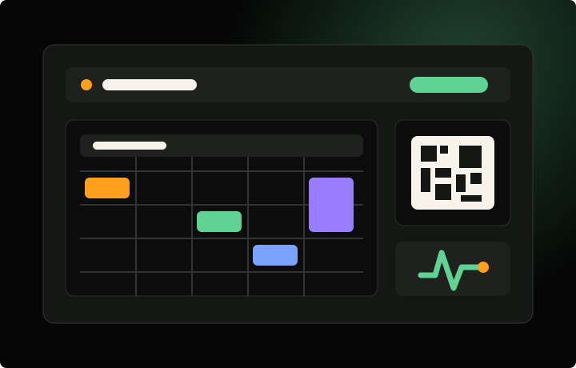

Projetos e estudos
Projetos em construção, estudo e aplicação prática.
Soluções desenvolvidas a partir de necessidades reais nas áreas de gestão rural, educação, organização escolar, informação pública e identidade digital.
Gestão rural
OvinoSync
Sistema híbrido para gestão de rebanhos ovinos, idealizado inicialmente como requisito de conclusão da graduação. Permite cadastrar animais, registrar manejos sanitários, técnicos, físicos e reprodutivos, acompanhar históricos individuais e consultar informações da propriedade. O projeto permanece em evolução, com ampliação gradual de recursos e possibilidades de uso.
Conhecer o OvinoSync →
Identidade digital
Portfólio
Projeto autoral criado para reunir formação, experiência profissional, docência, infraestrutura e desenvolvimento de sistemas em uma apresentação única. O portfólio está em constante evolução, acompanhando novos projetos, experiências e mudanças na trajetória profissional.
Ver página inicial
Informação e acolhimento
Ponto de Apoio
Projeto de extensão desenvolvido durante a licenciatura, concebido para inserir uma solução digital no debate educacional já promovido pelo projeto Catarina por Elas nas escolas estaduais do Estado de Santa Catarina. O site amplia essa discussão ao reunir orientações, formas de violência, direitos, canais de denúncia, rede de proteção, dados estaduais e fontes para estudo e conscientização.
Abrir projeto →
Gestão escolar
Reserva Fácil
Sistema mobile-first para escolas organizarem o uso de laboratórios. Professores consultam a agenda semanal e realizam reservas por links ou QR Codes, enquanto o laboratorista configura horários, turnos, turmas, disciplinas e recursos. A integração com Google Sheets, Drive e Apps Script registra reservas reais e impede conflitos de agendamento.
Abrir projeto →